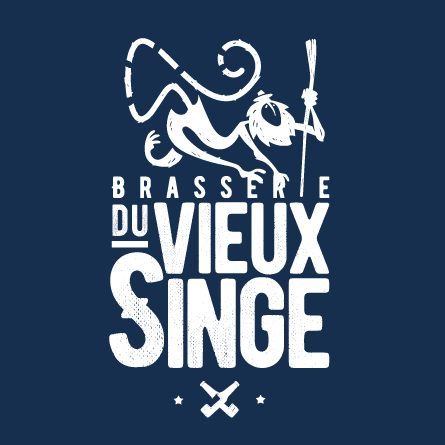

Brasserie du Vieux Singe — Installation en cours.
26 juin 2017, dans Journal Retours sur ces quelques mois consacrés à la création de la brasserie du Vieux Singe.
🌟
Ça fait maintenant quelques mois que j'ai décidé de changer de métier. Choix à la fois difficile et excitant. Une rupture qui laisse place à quelques étoiles dans les yeux. Enfin, je retrouve l'envie de créer, et je renoue avec mes rêves, ceux-la mêmes que je croyaient trop fous pour être à portée de main.
La chose la plus frappante, c'est la vitesse à laquelle passent les journées: j'ai vraiment l'impression d'avoir quitté Mozilla hier. Si les collègues me manquent, je ne ferais machine arrière pour rien au monde: je trouve finalement ce sens qui me manquait cruellement.
Après quelques hésitations au départ, j'ai décidé de mettre de côté mes activités liées à l'informatique: difficile à assumer quand on croise les copin.e.s avec qui on avait l'habitude de discuter énormement de ces sujets, mais ça permet de laisser plus de place pour l'humain. Plus de place pour les «Au fait, comment ça va toi ?» quand j'ai l'occasion de les recroiser, ce qui n'est pas plus désagréable :)
Les journées sont donc organisées autour de la brasserie: beaucoup plus de planification que ce que j'imaginais au départ. Peut-être que c'est aussi du au fait que nous soyons tous les deux des ex-informaticiens un peu perfectionnistes sur les bords. On se voit très souvent pour avancer sur des sujets de fond tout comme sur du pratico-pratique. Pour vous donner un ordre d'idée des questionnements: Quelle taille d'entreprise ? Quelles valeurs communes ? Quelles bières ? Quelle image donner ? Quelle place donner au confort ? Comment éviter la compétitivité ? Comment réussir à impacter les producteurs (houblon / malt) de manière positive ? Quels salaires se donner ?
Un peu de production quand même (pour les amis) mais on se garde la grosse partie pour le lancement.
Apprentissage
Je profite de ces quelques mois pour apprendre: autour de la fabrication et de la dégustation de bière bien sûr (encore un milieu en constante évolution !), mais pas que. J'ai maintenant quelques bases de gestion d'entreprise, en comptabilité, en biologie et en chimie. J'ai bien dit quelques bases, mais qu'est-ce que c'est agréable !
C'est assez agréable de se remettre dans une posture d'apprenant, et d'avoir le temps pour cet apprentissage.
Questionner la posture de «Chef d'entreprise» et son rapport au temps
Décider de créer sa boîte, c'est aussi se poser la question de comment organiser son temps: combien de temps travailler ? Quel temps donner aux loisirs ?
Je trouve rassurant de voir ces interrogations abordées avant-même le démarrage de l'entreprise. La plupart des personnes qui nous suivent et nous guident partent du postulat qu'il faudra bosser énormement, là ou nous essayons de trouver un modèle qui soit viable dans le temps, notre souhait est de bosser à 80% (4 jours par semaine).
Certes, il faut travailler pour que ça tourne, mais il faut aussi s'accorder des temps de respiration pour être d'autant plus efficace quand on bosse. C'est d'autant plus intéressant de prévoir ces aspects lors de la phase de design de l'activité: on organise le temps autrement ! Ceux qui me lisent de temps à autre savent que c'est une constante de mes réflexions, on verra si ça fonctionne dans les faits.
Les projets collectifs
Un autre point important est la place que le collectif prends dans cette nouvelle expérience. Au départ, quand j'imaginais le projet sur le court-terme, je mettais la composante collective au second plan dans l'immédiat (au delà des intéractions avec Fred, mon associé). L'occasion de travailler à la construction d'un espace collectif s'est présentée, et on y travaille actuellement.
C'est à la fois riche (en partage de points de vue, en entre-aide) et à la fois difficile (beaucoup d'heures de réunions, il faut apprendre à communiquer de manière efficace, il faut parfois faire face à des conflits). Dans l'ensemble, je ne regrette pas ce choix même si il est important de ne pas perdre de vue les objectifs de la brasserie dans l'histoire.
Et puis la collaboration ne s'arrête pas qu'au collectif d'activité: le milieu brassicole est en mutation, et les valeurs de partage font bel et bien partie du lot de changements. Les rencontre avec les brasseurs du coin de Rennes le montrent bien: l'esprit est plus à l'entraide qu'à la concurrence, au vu de la demande qui est toujours croissante. Tant mieux, on a autre chose à faire qu'à se tirer dans les pâtes ;)
Besoin de concret
Après cette phase assez énorme de réfléxion, de questionnement, de tricotage, de détricotage, de retricotage, j'ai bien envie de passer à l'action; et ça tombe bien, c'est ce qui est à l'horizon. L'idée est d'ouvrir la brasserie à la fin de cette année pour commencer la commercialisation en Janvier 2018. Ça fait un peu peur de voir l'échéance arriver, mais c'est aussi excitant que vertigineux…
Faire ensemble. Imaginer les choses en petit un peu partout. Collaborer plutôt que se tirer dans les pattes. Renverser la vapeur. Trouver des alliés. Faire levier. Inscrire ses projets dans le temps. C'est peut-être un peu ça, grandir ?